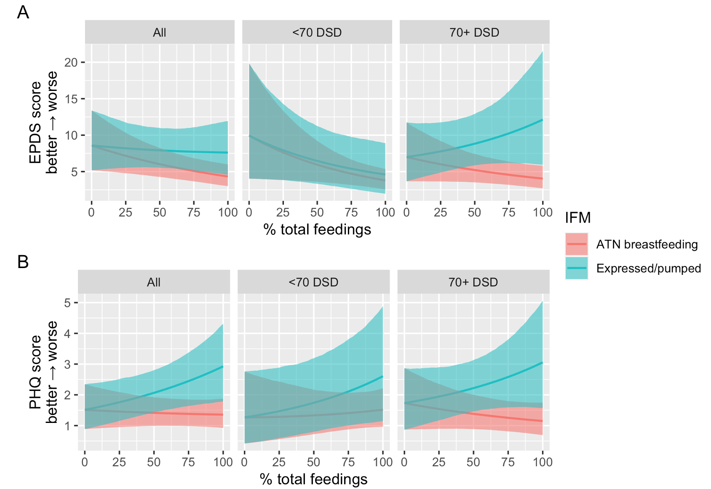
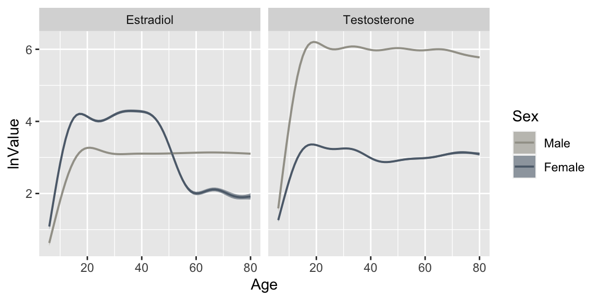
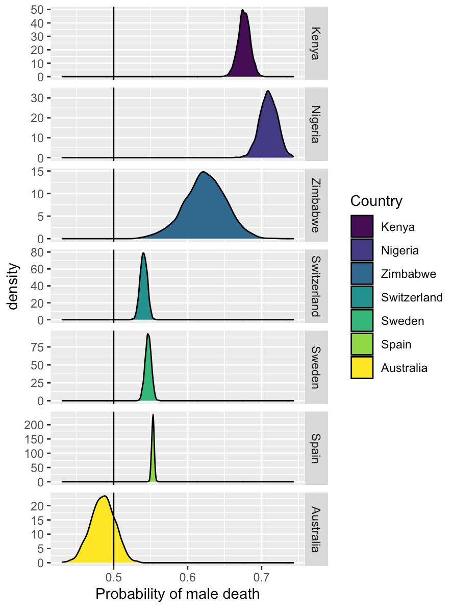
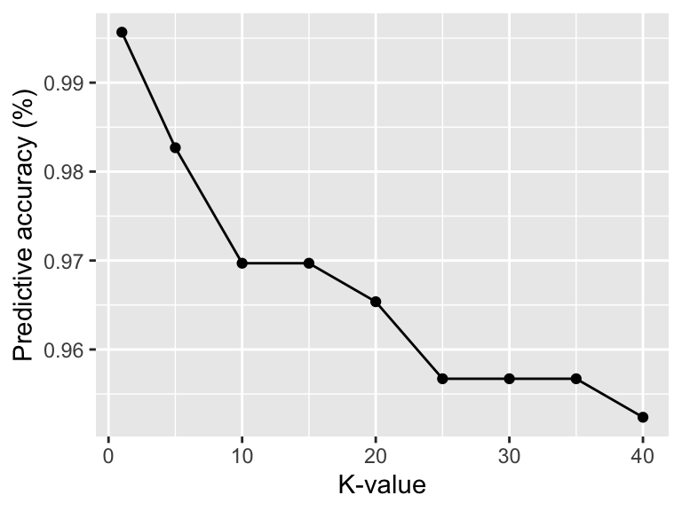

Statistics/ML
Does breastfeeding behavior correspond to
differences in perceived physical and mental wellbeing among postpartum
women?
Using survey data I collected for
the Seattle Postpartum Health
Study, I employed linear Bayesian regression models to estimate the
association between infant feeding behavior (at-the-nipple
breastfeeding, use of expressed/pumped breastmilk) and reported mental
(EPDS score) and physical (PHQ) health. To parse out potential effects
of time since delivery, I also ran separate models using early versus
late postpartum as an interaction term (<70 DSD = less than 70 days
since delivery, >70 DSD = more than days since delivery). Plot A
shows that ATN breastfeeding is reliably associated with fewer symptoms
of depression, while effects of pumping vary by time since delivery.
Plot B shows that pumping is associated with more symptoms of physical
illness, regardless of time since delivery.
Manuscript in prep.

Does the degree of sexual dimorphism in
immune function vary across populations as a function of divergent
ecological conditions (e.g., pathogen burden, reduced energetic
reserves)?
For this paper, I utilized
data from the Tsimane Health and Life History Project and NHANES and Bayesian nonlinear hierarchical
regression models to estimate the population-specific effects of age on
immune function, stratified by sex and female reproductive phase. Below
is a graph showing estimated median natural-logged white blood cell
count (and 95% credible intervals) by age, sex, and female reproductive
phase among individuals in the USA. Manuscript in
prep.

How do predicted values vary between models
specified using brms versus mgcv?
This
was a fun side project, where I modeled the non-linear sex-specific
effects of age on estradiol and testosterone levels using brms and mgcv packages and compared the predicted values.
Below is a plot showing the mgcv predicted median values and 95%
credible intervals for estradiol and testosterone among males and
females by age. Click here
for the corresponding write-up and R code.

Does sex bias in COVID-19 mortality differ
between high-income and low-income countries?
During summer 2021, I worked with my Research Mentorship Program student Delaney Nystrom
to pull publicly available data from the Sex, Gender and COVID-19 project to determine if/how
sex bias in COVID-19 mortality varied by country using binomial
classification models. Below is a graph showing predicted probability of
male (versus female) death due to COVID-19 in four high-income countries
(Australia, Spain, Sweden, Switzerland) and three low-income countries
(Kenya, Nigeria, Zimbabwe).

How well do different Machine Learning
algorithms predict precipitation in Seattle?
This was a for-fun side project, where I used logistic
regression, Naïve Bayes, and k-Nearest neighbors to predict
precipitation in Seattle. Please click here for full write-up and R code. Plot below shows
the predictive accuracy of my k-Nearest neighbors model by
specified K-value.
